IR
Overview
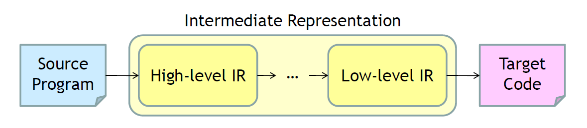
- High-level representations
- Syntax trees
- Closer to source language
- Suitable for static type checking
- Low-level representations
- Three-address code
- Closer to target machine
- Suitable for machine-dependent tasks like register allocation and instruction selection
Intermediate Representation
Syntax Trees
abstracting away irrelevant details from a parse tree
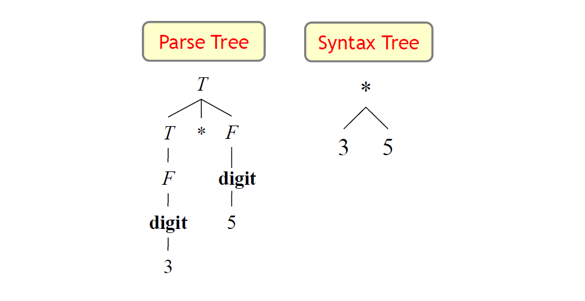
DAG
Common subexpressions are not replicated
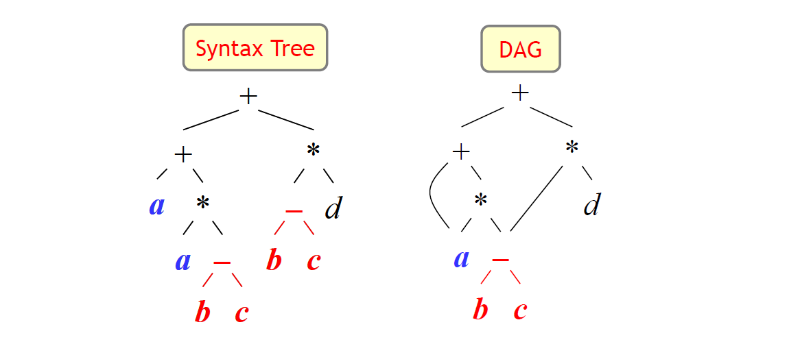
Construction of DAG: Before creating a new node, we check whether the node exists
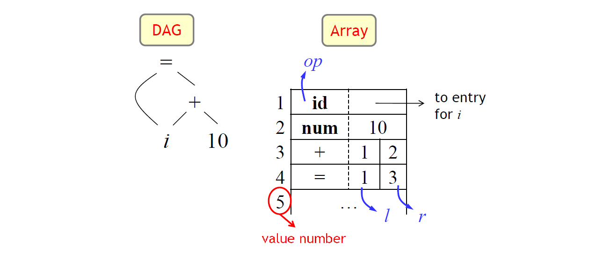
- Signature of an interior node: <>
- : label
- : left child’s value number
- : right child’s value number (0 for unary operators)
Algorithm:
- Search the array for a node with label , left child , and right child
- If there is such a node, return the value number of
- Create a new node if not found, and return its value number
Use hash table to implement (for efficiency)
Three-Address Code
In three-address code, there is:
- At most one operator on the right side of an instruction
- At most three address (operands)
- One destination operand
- Two source operands
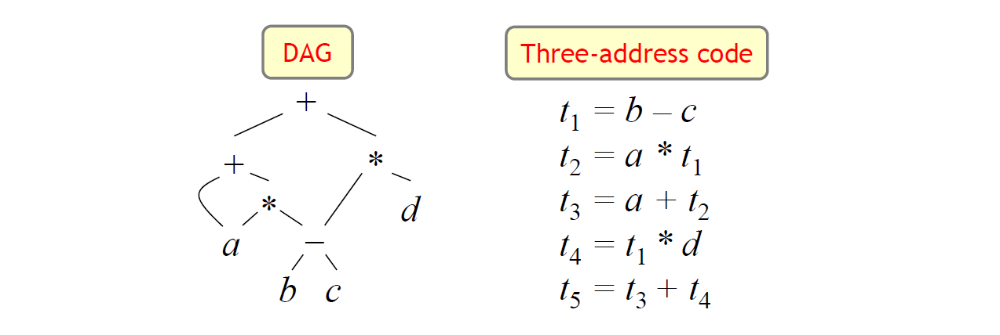
Three-address code is built from two concepts:
- Addresses
- A name
- A constant
- A compiler-generated temporary
- Instructions
- binary operation assignment:
- unary operation assignment:
- copy instruction:
- unconditional jumps: (L: a label)
- conditional jumps:
- procedure calls and returns:
- …
- indexed copy instructions
- address and pointer assignments
Three-address code can be implemented using records with fields for operations and addresses
Symbolic labels will be used by instructions that alter the flow of control
Example
do i = i + 1; while (a[i] < v);
Using symbolic labels:
1 | L: t1 = i + 1 |
Using position numbers:
1 | 100: t1 = i + 1 |
Some note
如果 IR 沒有分 level，且一開始 IR 就很接近 machine code，一些 high-level 的 Info 就會丟失(ex. loop…) > Optimize 會有困難
Data Structures
- Quadruples
- four fields: <, , , >
- Temporary names are used explicitly
- Triples
- three fields: <, , > (不需要 dst，存在 op 的位置)
- Temporaries are not used and instead references to instructions are made (by positions)
- Indirect triples
- use a list of pointers to triples
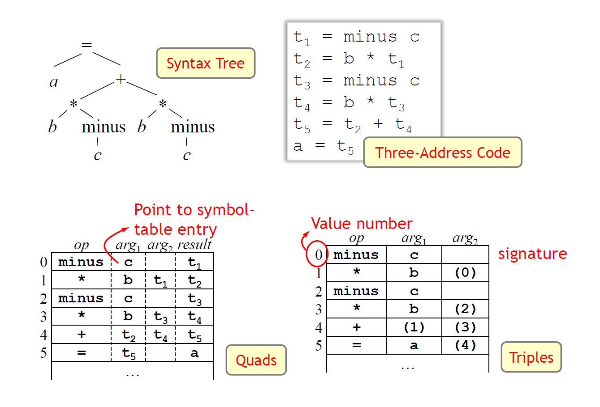
quadruple 可能比較適合做 optimization
e.g.
instruction reorder (算較慢的先做) 可以任意調
triple 對調指令時連存放的地方都要改，麻煩 >> 使用 indirect triple
維護一個 array of pointer，指向原本的 triple
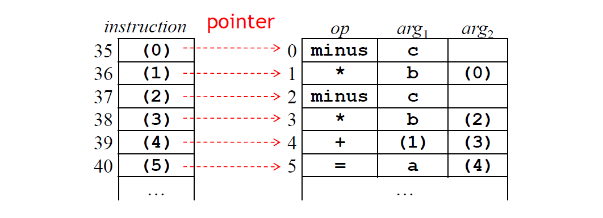
compiler reorder the instruction list, without affecting the triples themselves
SSA Form
SSA: Static Single-Assignment
每一個變數或temp只會被assign一次，減少 dependency，比較容易 optimization
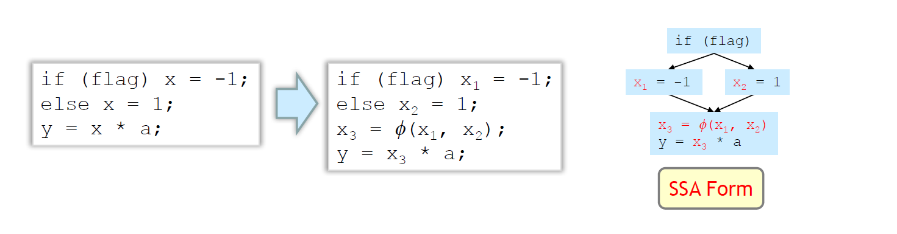
read after write: flow dependence
write after read: anti dependenae (因為用了相同的名字才有dependence)
write after write: output dependence
More info: Data dependency
: 接收兩個值的其中一個值
Intermediate-Code Generation
Types and Declarations
- 型別檢查
- data 再 memory 怎麼擺放
- 存相對的位置
Storage Layout
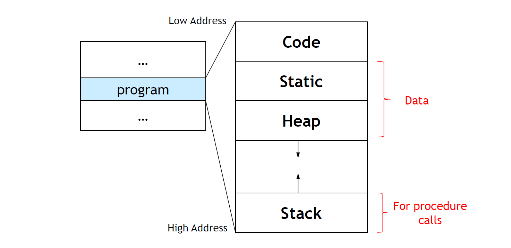
static: 在 runtime 之前可以決定且不會變化的變數 (全域或static的區域變數)
function push 到 stack，區域變數存在其中，位置隨 runtime 改變
heap: dynamic data (e.g. malloc) 可以增減，非 compiler 管理，由 memory manager 負責維護哪些空間是空的 (e.g. malloc 就交給 malloc 的 library 管理)
Type Expressions
- Types have structure
- represent using type expressions
- Basic types
- Applying an operator, type constructor
- e.g. 2 個 ( 3 個 int 的 array ) 的 array
- represent using type expressions
Definitions
- A basic type is a type expression
- e.g. boolean, char, integer, float, void, …
- A type name is a type expression
- e.g. typedef (int *[5]) newtype
- A type expression can be formed by applying the type constructor to a number and a type expression
- e.g. (3, integer)
- A record is a data structure with named fields
- e.g. structures in C
- A type expression can be formed by using the type constructor for function types
- e.g. (function from type to type )
- If and are type expressions, then their Cartesian products is a type expression
- Represents a list of types
- Left associative, higher precedence than
- Type expressions may contain variables whose values are type expressions
- 動態型別仍要做型別檢查 (引入 type variables)
Representation
use DAG
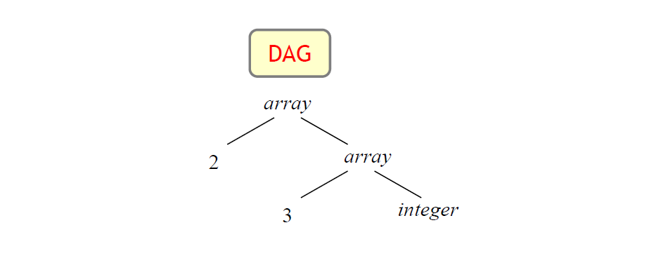
- Interior nodes
- Type constructors
- Leaves
- Basic types, type names, and type variables
Type Equivalence
structurally equivalent: 結構一樣才一樣
e.g. int A[10], int B[10]: array of 10 int
name equivalent: 名字一樣就一樣
e.g. typedef int dollars: int, dollar 不同 type
1 | typedef struct { |
name equivalent: x = r is invalid
structurally equivalent: x = r is valid
More info: structural equivalence vs name equivalence
Name Declarations
看到資訊保留到 symbol table 中，不需要產生 IR 來說明這個 declaration
Storage Layout for Names
- Determine the amount of storage that will be needed for the name at run time
- At compile time, we can use these amounts to assign each name a relative address (saved in the symbol table)
- 型別也代表了寬度
- e.g. int: 4bytes, float: 8bytes
1 | int a; |
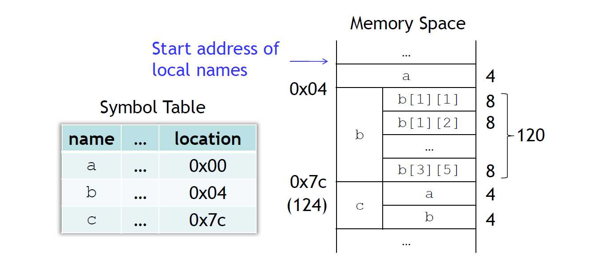
symbol table 也存了擺放位置的資訊，為了將來 load data 到 reg 或 store data 到 reg
java bytecode 不需要考慮 memory 擺放的問題
Address Alignment
- 擺放的位置可能需要被 4, 8 整除
- e.g. 起始位置如果不能被 4 整除，可能需要多 2 個 op 才能 access
- Solution: 加上 padding
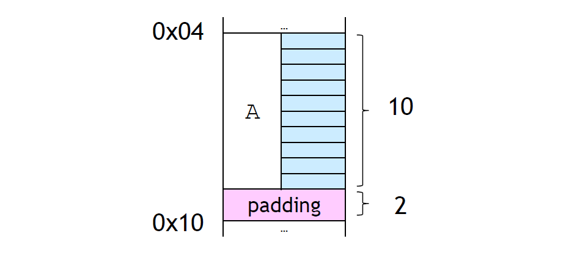
Example
Computing Types and Their Width:
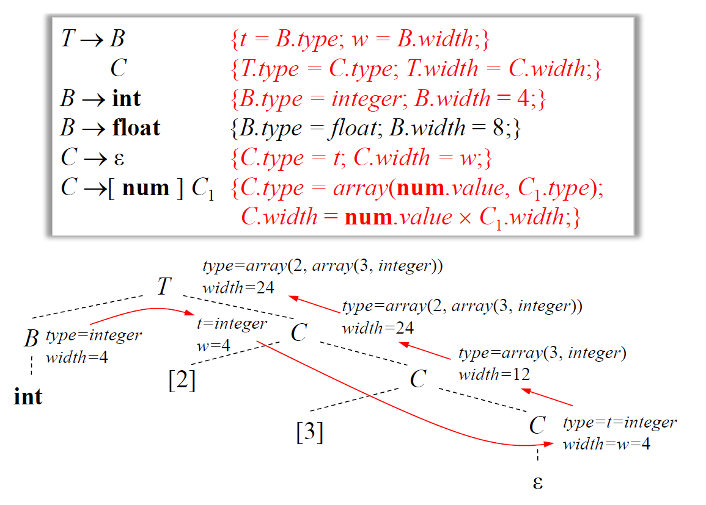
計算 type expression 及 type 寬度 >> 透過撰寫 SDT
- 當看到 Int reduce 回 B 時，知道 type:int, 寬度:4
- 遞迴到右下的 C
- reduce 回 C: array(3, int), w:12
- reduce 回 C: array(2, array(3, int)), w:24
- reduce 回 T
Computing the Relative Addresses:
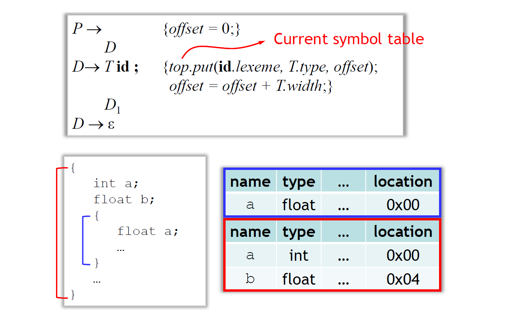
- 看到新的 compound stmt，push 一張新的 symbol table 到 stack
- 累加 offset 計算 location
Handling of Field Names in Records:
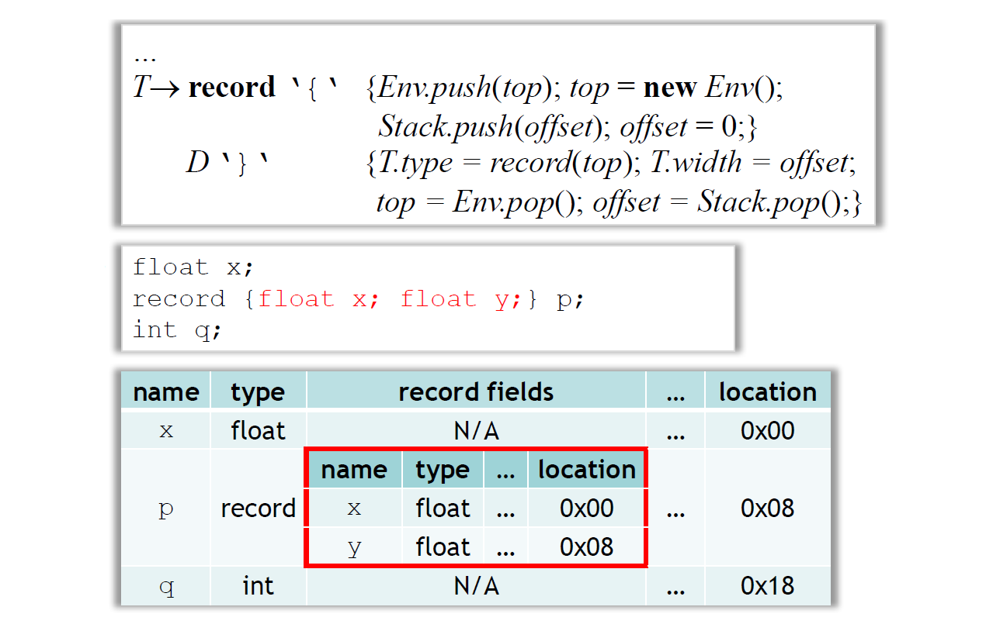
- new 出一張新的 symbol table
- 進入裡面的 symbol table 時先處理完外面的 symbol table，進入後歸零 offset
Summary
當看到變數宣告就把變數加道 symbol table，存 type, offset
Translation of Expressions
SDD
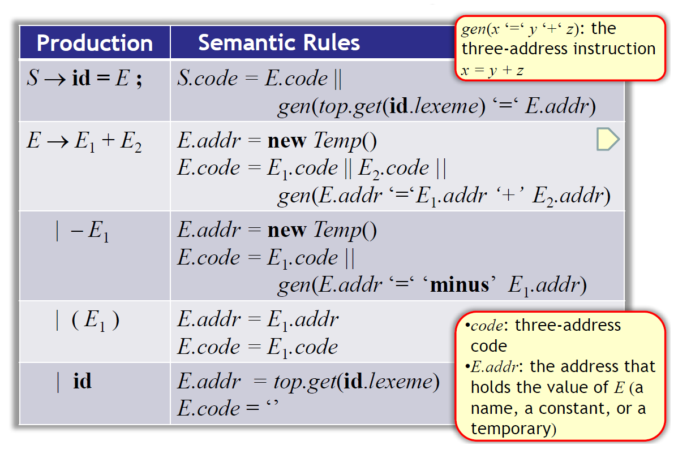
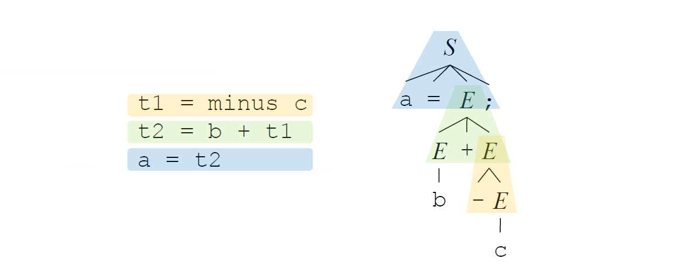
- -E reduce 回 E > t1
- E + E reduce 回 E > t2
- id = E reduce 回 S > a = t2
SDT
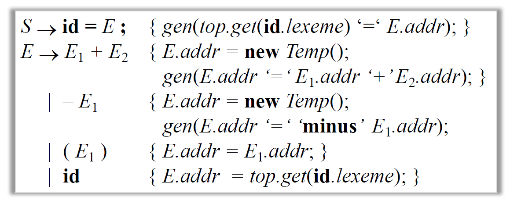
Addressing Array Elements
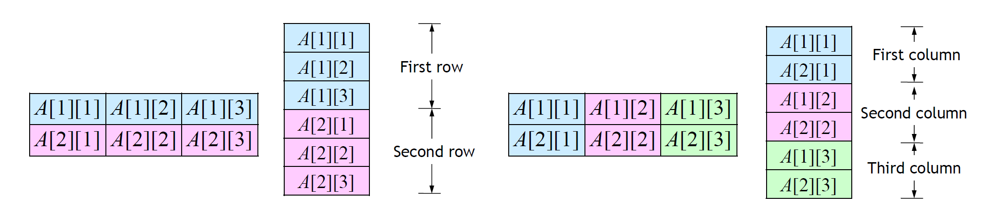
formula: k-dimension
SDT
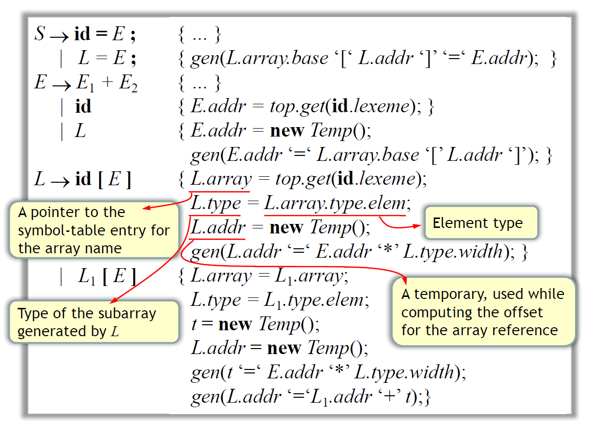
- L.array: 是放在 symbol table 的哪個 entry
- L.type: subarray 的型別
- L.addr: temp, 計算 offset 是多少
Example
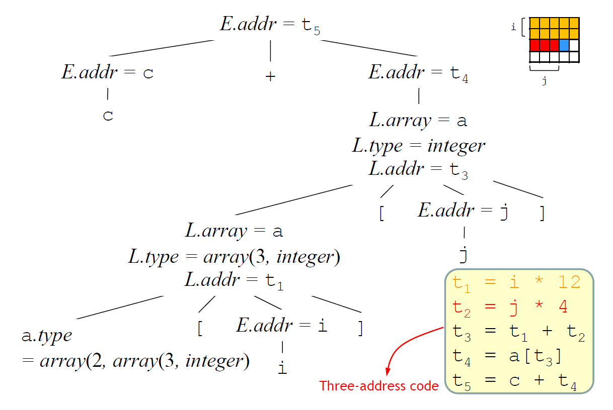
Type Checking
p52
使用者寫的與預期的是否一致
一個健全的 type system 可以在 compile time 就檢查完 type error
c 不是 strongly type language
1 | union flexType { |
p53
type synthesis: static-typed
type inference: dynamic-typed
p55
型別轉換
p57
p59
function overloaded
p60
adhoc polymorphic
p61
推導type expression
用 type inference rule (for 動態型別語言)
p62
- boolean condition + 2個type variables
p63
unify: 要把 type variable 取代成實際的 variable
p64
t 的 instance，把 t 實體化
sub: type expression 做實體化
某一個 sub 是兩個 Type expression 的 unifier
p65
p66
給 2 個 node 判斷能不能 unify
p67
編號: unique number
檢查1.9可不可以被unify
p71
control flow statement
p77
fall through 簡化 goto
p83
可不可以一邊parsing的過程產生右邊的IR?
p84
backpatching
jump 與 target 做 match
先產生goto，taget先不要填，等address知道後再填
p85
不用 Inherit attribute
truelist，一堆goto，當b是true會執行的goto
falselist，…，當b是false會執行的goto